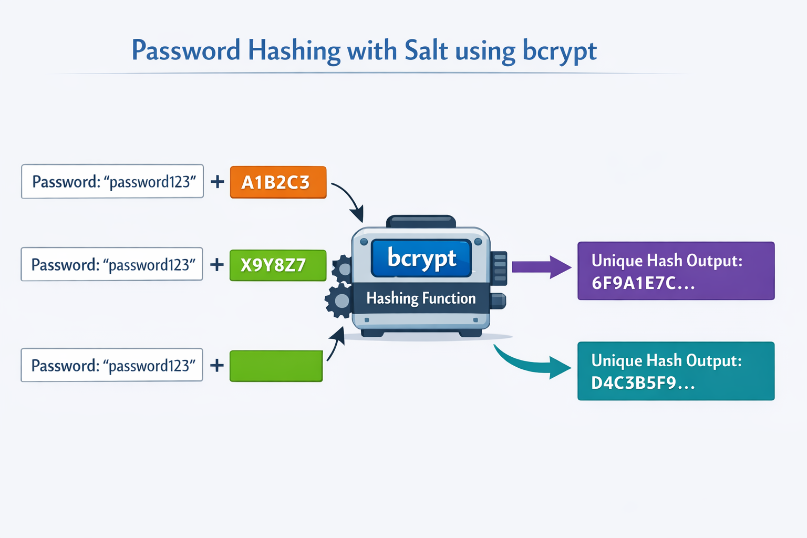
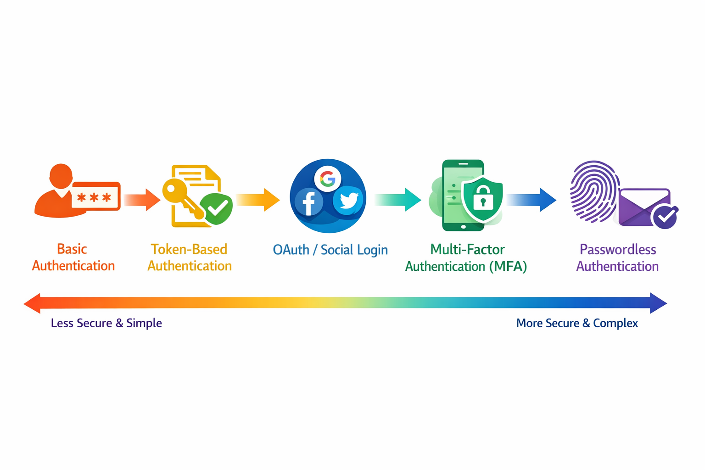
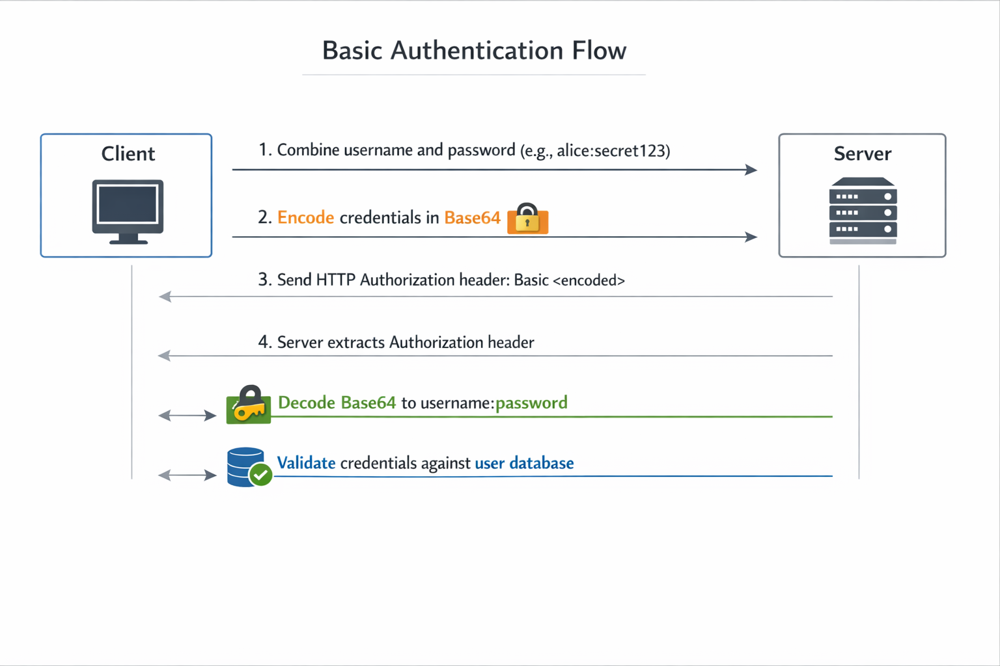
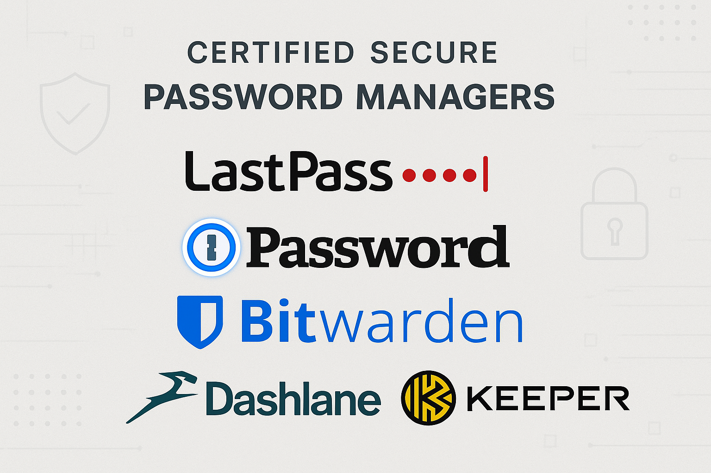
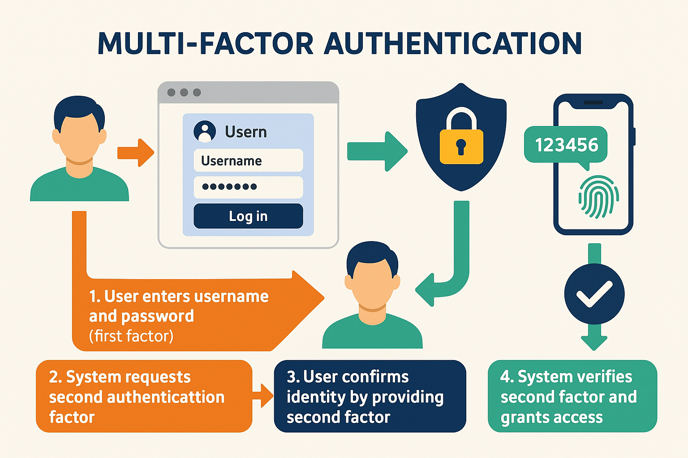
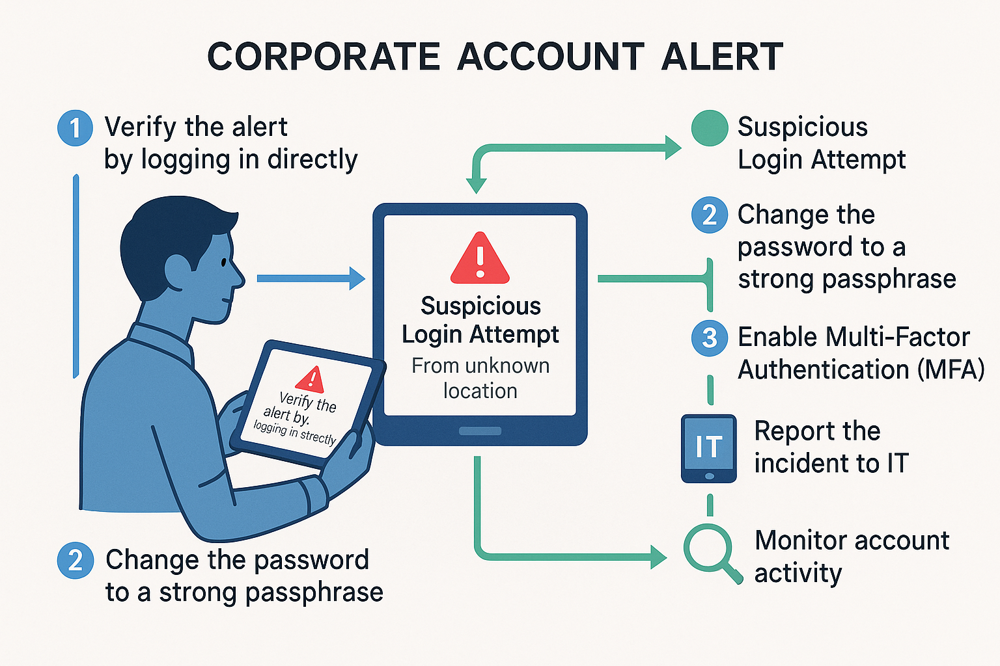
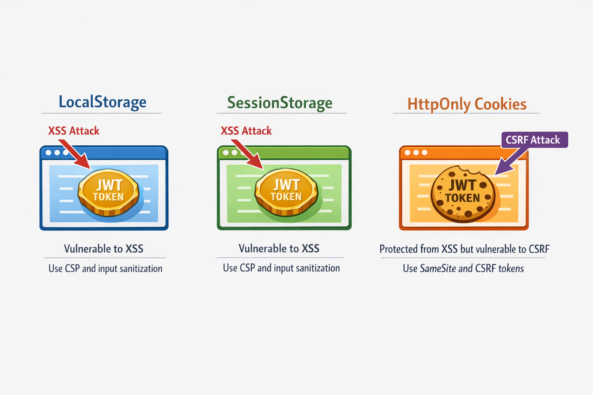
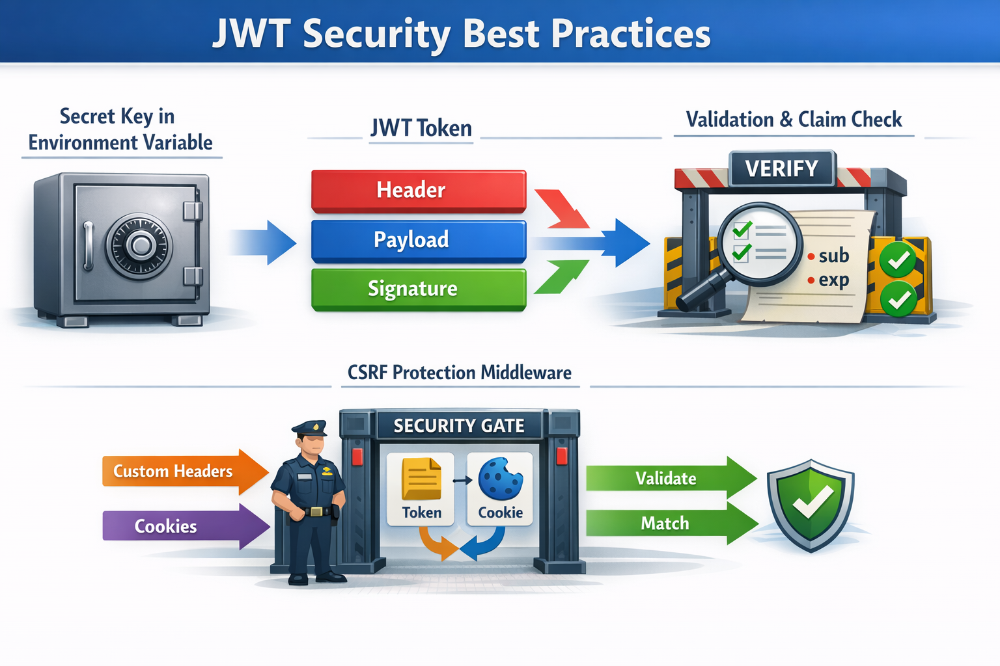
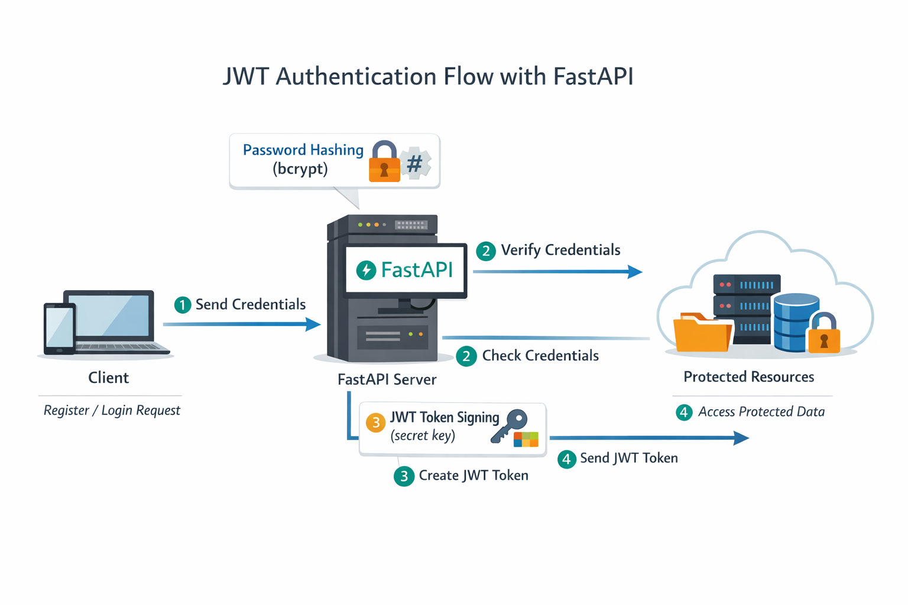

Clase 37:
Autenticación Backend y JWT en FastAPI
🎯 Estructura y Prácticas de esta Clase:
- 🦾 Práctica 1: Fundamentos de Autenticación Web
- 🦾 Práctica 2: Contraseñas Seguras y Autenticación
- 🦾 Práctica 3: Autenticación JWT en FastAPI
- 💻 Proyecto Final: Securing the API: Authentication and Route Restriction in FastAPI
🔐 Autenticación vs Autorización: Pilares de Seguridad Web
Comprender la diferencia entre Autenticación y Autorización es crucial para construir aplicaciones web seguras. Aunque trabajan juntos, cumplen propósitos completamente distintos en el control de acceso.
Es el proceso de verificar y confirmar la identidad de un usuario o sistema. Métodos comunes incluyen verificación de usuario/contraseña cifrada, validación de Tokens (JWT) o biometría.
Determina las acciones y recursos a los que se permite acceder una vez confirmada la identidad. Controla el acceso basado en permisos o roles (RBAC) e inspección de rutas en FastAPI (401 vs 403).
📊 Cifrado de Contraseñas con Salt y Bcrypt: Diagrama Visual
"Las contraseñas robustas son la cerradura principal: si es débil, cualquiera entra a tu casa sin esfuerzo."
Almacenar las contraseñas de los usuarios de forma segura es uno de los aspectos más críticos para construir sistemas de...
- Cifrado transforma los datos en una forma codificada que puede revertirse...
- Hashing convierte los datos en una cadena de caracteres de tamaño fijo,...
- Nunca almacenes contraseñas en texto plano.

Cifrado de Contraseñas con Salt y Bcrypt📊 Panorama de Métodos de Autenticación: Diagrama Visual
"La autenticación confirma quién eres en la puerta, como mostrar tu documento oficial."
Los métodos de autenticación forman la columna vertebral para asegurar las aplicaciones web.
- Autenticación Básica: La forma más simple, que transmite credenciales con...
- Autenticación Basada en Tokens: Utiliza tokens para reducir la exposición de...
- OAuth e Inicio de Sesión Social: Delegan la verificación de identidad a...

Panorama de Métodos de Autenticación📊 Mecánica de Autenticación Básica: Diagrama Visual
"La autenticación confirma quién eres en la puerta, como mostrar tu documento oficial."
La Autenticación Básica es uno de los métodos más simples para asegurar aplicaciones web mediante la verificación de las...
- La Autenticación Básica codifica las credenciales en Base64 y las envía en el encabezado HTTP.
- Es simple pero tiene limitaciones significativas de seguridad.
- Usar solo en entornos seguros y controlados con HTTPS.

Mecánica de Autenticación Básica📊 Password Managers Your Digital Ally: Diagrama Visual
"Las contraseñas robustas son la cerradura principal: si es débil, cualquiera entra a tu casa sin esfuerzo."
Gestionar múltiples contraseñas fuertes puede resultar abrumador, pero existe una solución inteligente que lo hace más fácil:...
- Almacena tus contraseñas en una bóveda cifrada.
- Genera contraseñas fuertes y únicas para cada una de tus cuentas.
- Rellena automáticamente los datos de inicio de sesión cuando visitas sitios...

Password Managers Your Digital Ally📊 Multifactor Authentication As Your Final Barrier: Diagrama Visual
"La autenticación confirma quién eres en la puerta, como mostrar tu documento oficial."
Agregar Autenticación Multifactor (MFA) a tus cuentas es como añadir una segunda cerradura a la puerta de tu...
- Algo que sabes: como tu contraseña o PIN.
- Algo que tienes: como tu teléfono o un token de seguridad.
- Algo que eres: como tu huella dactilar o reconocimiento facial.

Multifactor Authentication As Your Final Barrier📊 Reallife Example Corporate Account Alert: Diagrama Visual
"Entender Reallife Example Corporate Account Alert permite aplicar buenas prácticas de seguridad e ingeniería en la aplicación."
Imagina recibir una alerta de que alguien intentó acceder a tu cuenta corporativa desde una ubicación o dispositivo inusual.
- Prevenir accesos no autorizados que podrían causar brechas de datos.
- Proteger información sensible de la empresa y mantener la confianza.
- Detener posibles daños antes de que se propaguen.

Reallife Example Corporate Account Alert📊 Frontend Token Storage Strategies: Diagrama Visual
"El flujo JWT es como una discoteca: verificas tu DNI en la entrada (login) y te dan una pulsera (JWT) para pedir consumiciones en..."
Cuando tu backend emite un token JWT después de un inicio de sesión exitoso, la siguiente pregunta crítica es: ¿dónde y...
- LocalStorage es vulnerable a ataques de Cross-Site Scripting (XSS) porque...
- Mitigación: Implementa políticas estrictas de Content Security Policy (CSP) y...
- Comúnmente usado en Aplicaciones de Página Única (SPA) por su facilidad de acceso.

Frontend Token Storage Strategies📊 Jwt Security Best Practices: Diagrama Visual
"El flujo JWT es como una discoteca: verificas tu DNI en la entrada (login) y te dan una pulsera (JWT) para pedir consumiciones en..."
La seguridad en la autenticación JWT es fundamental para proteger los datos de los usuarios y mantener la confianza en tus...
- Mantén tu clave secreta segura usando variables de entorno y una gestión...
- Valida todas las reclamaciones de la carga útil JWT minuciosamente,...
- Implementa protección CSRF cuando uses almacenamiento de JWT basado en...

Jwt Security Best Practices📊 Building Authentication Endpoints: Diagrama Visual
"La autenticación confirma quién eres en la puerta, como mostrar tu documento oficial."
En esta lección, implementarás los endpoints principales de autenticación para tu aplicación FastAPI: registro de...
- El endpoint de registro almacena de forma segura contraseñas cifradas y...
- El endpoint de inicio de sesión verifica credenciales y emite tokens JWT para...
- Las contraseñas se cifran con bcrypt para proteger los datos del usuario.

Building Authentication Endpoints💻 ¡Ahora a la Parte Práctica!
Demuestra lo aprendido aplicando los conceptos de esta clase en el proyecto práctico. Abre tu entorno de desarrollo y resolvamos los ejercicios interactivos.
ai-eng-user-authentication-api
Python • FastAPI • JWT • LearnPack
Código funcional, tests en verde & repo actualizado